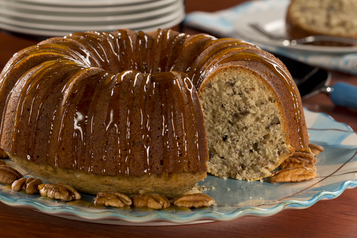

Caramel Nut Cake
Caramel Nut Cake is one of those caramel cake recipes you're going to be passing onto your kids. It has an old-fashioned southern flavor that'll earn raves all around. Feel free to share the recipe with friend and neighbors! After all, you want to make sure this caramel cake recipe is baked so often that you've always got a slice on hand. Fancy it up by drizzling ooey gooey caramel sauce on top with a sprinkling of nuts. Yum!
ingredients
- 1 &fra12; cup (3 sticks) butter, softened
- 2 cups packed light brown sugar
- 5 eggs
- 3 cups all-purpose flour
- &fra12; teaspoon baking powder
- ¼teaspoon salt
- ½cup milk
- 1 teaspoon vanilla extract
- 2 cups coarsely chopped pecans
steps
- Preheat oven to 325 ° Coat a 10-inch Bundt or tube pan with cooking spray; set aside.
- In a large bowl, with an electric beater on medium speed, beat butter and brown sugar until fluffy. Add eggs and beat until smooth. Reduce speed to low and add flour, baking powder, and salt. Gradually beat in milk and vanilla until well blended. Stir in pecans; mix well then spoon batter into prepared pan.
- Bake 55 to 60 minutes, or until a toothpick inserted in center comes out clean. Let cool 15 minutes then invert onto a wire rack to cool completely. Serve, or cover until ready to serve